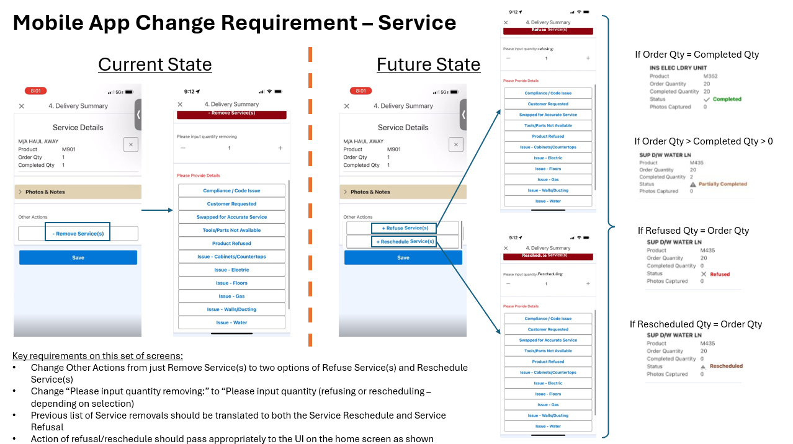

A delivery can be complete while an installation service still needs a return visit. I translated this operational gap into a mobile workflow and a visual specification for the development team.
The problem
The previous delivery system could not reschedule individual service codes, such as attaching a dishwasher power cord. If a service had to wait—for example, until a countertop was finished—the customer had to contact GE Appliances to request a new order in the ERP system for a return visit.
The solution
Create a mobile workflow that lets installers reschedule services instead of only canceling them. My visual specification showed the current and future screens, separate refusal and rescheduling paths, and how each action should appear in the service status.
The value
The workflow used the new system’s architecture to support a return visit without requiring a whole new ERP order, avoiding manual effort for customers and order management teams. No quantitative results are shared.

FROM REQUIREMENT TO VISUAL SPECIFICATION
Making the change clear for development
Current-state and future-state screens connect the business requirement to interface actions, quantity handling, and service-status rules. The annotated specification gives the development team a shared reference for the intended behavior.
Select the specification to view it at full size.